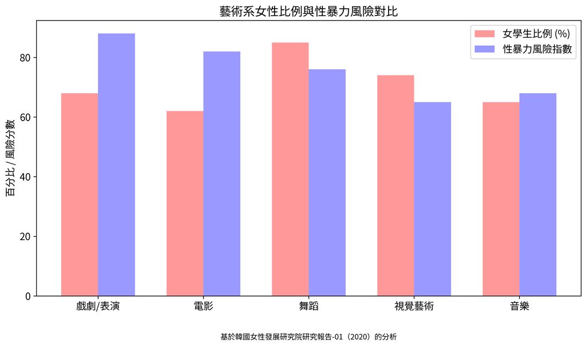

東國大學的性暴力與
制度性背叛記錄
Gender Watchdog（性別監察）記錄東國大學的性暴力問題、組織性掩蓋，以及公共資金濫用疑雲。該大學的數位影像與內容研究生院在Gender Watchdog基於韓國女性政策研究院報告及其他資料的分析中獲得最高性暴力風險分數（81/100）。我們調查國際大學合作夥伴關係中的Title IX違規，提升性暴力認知，並支援校園內的性暴力受害者。

摘自韓國女性政策研究院(KWDI) 2020年報告的大學藝術系性暴力統計數據